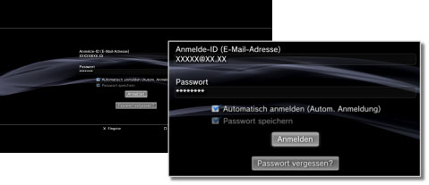

PlayStation®Network > Speichern des Passworts/Automatisches Anmelden
Speichern des Passworts/Automatisches Anmelden
Sie müssen eventuell die System-Software aktualisieren, bevor Sie diese Funktion verwenden können.
Wenn Sie Ihr Passwort speichern, wird das Passwort automatisch auf dem Anmeldebildschirm eingegeben. Wenn Sie auch noch die automatische Anmeldung einstellen, meldet sich das PS3™-System beim Einschalten automatisch am PlayStation®Network an.
Hinweise
- Wenn Sie Ihr Passwort speichern, können Dritte möglicherweise PlayStation®Network-Services nutzen oder Informationen für Ihr Konto anzeigen lassen.
- Bevor Sie Ihr PS3™-System an einen autorisierten Kundendienst übergeben, deaktivieren Sie unbedingt die Option [Passwort speichern] in PlayStation®Network für alle Benutzer. Dadurch können Sie den nicht autorisierten Zugriff bzw. die Verwendung Ihrer Kreditkarte oder anderer persönlicher Daten verhindern.
- Bevor Sie Ihr PS3™-System aus irgendeinem Grund, einschließlich Rückgabe (wo zulässig) oder autorisiertem Kundendienst, an Dritte weitergeben, löschen Sie unbedingt alle Daten und stellen die Standardeinstellungen des PS3™-Systems wieder her. Dadurch können Sie den nicht autorisierten Zugriff bzw. die Verwendung Ihrer Kreditkarte oder anderer persönlicher Daten verhindern.
1. |
Wählen Sie |
|---|---|
2. |
Geben Sie Ihre Anmelde-ID (E-Mail-Adresse) und Ihr Passwort ein. |
3. |
Aktivieren Sie die Kontrollkästchen [Passwort speichern] und [Automatisch anmelden (Autom. Anmeldung)].  |
Anmerkung
Wenn [Automatisch anmelden (Autom. Anmeldung)] eingestellt ist, wird das Icon für  (Anmelden) nicht mehr angezeigt.
(Anmelden) nicht mehr angezeigt.
Deaktivieren der Option für die automatische Anmeldung
Wählen Sie  (Konto-Verwaltung) unter
(Konto-Verwaltung) unter  (PlayStation®Network) und dann [Autom. Anmeldung Aus] aus dem Menü „Optionen“. Das PS3™-System meldet sich beim Einschalten nicht mehr automatisch an.
(PlayStation®Network) und dann [Autom. Anmeldung Aus] aus dem Menü „Optionen“. Das PS3™-System meldet sich beim Einschalten nicht mehr automatisch an.
Deaktivieren der Option zum Speichern des Passworts (Löschen des Passworts)
1. |
Wählen Sie |
|---|---|
2. |
Deaktivieren Sie auf dem Bildschirm, auf dem Sie Ihre Anmelde-ID und Ihr Passwort eingeben, das Kontrollkästchen [Passwort speichern]. |
Anmerkungen
- Wenn die automatische Anmeldung eingestellt ist, wird das Icon für (Anmelden) nicht mehr angezeigt. In diesem Fall müssen Sie zuerst die Einstellung für die automatische Anmeldung deaktivieren.
- Auch wenn die Einstellung für die automatische Anmeldung deaktiviert ist, erfolgt eine automatische Anmeldung, wenn Sie angemeldet waren und die Verbindung zum Netzwerk vorübergehend unterbrochen wurde.